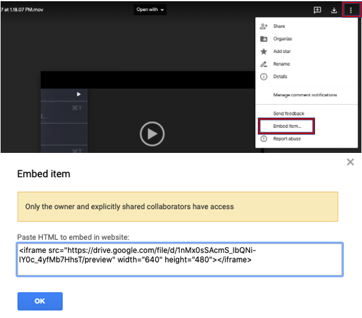
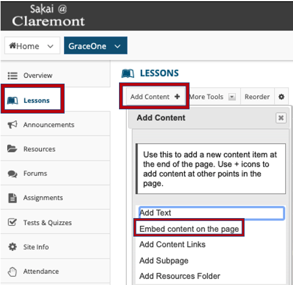
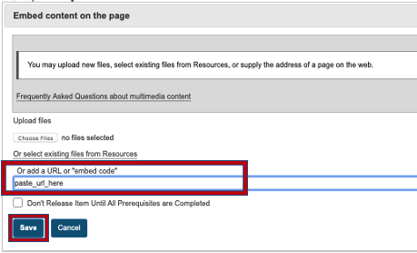
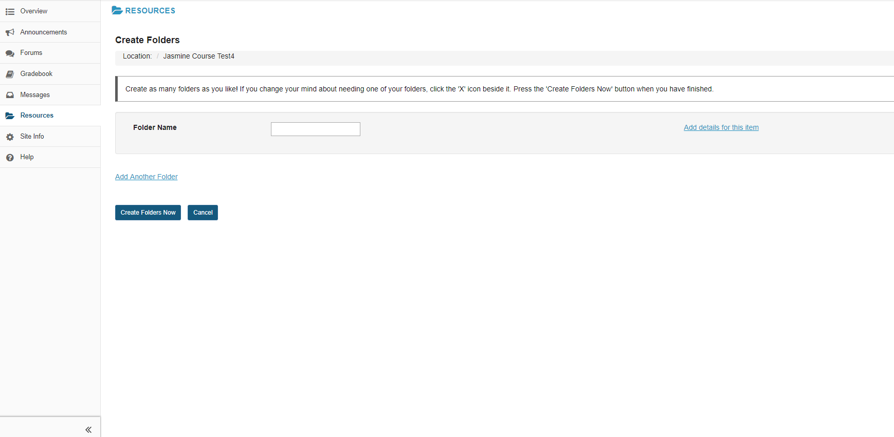

What's new in Sakai?
Sakai has been refined to help Students and Faculty during this online semester. These upgrades are important to keep the Claremont Colleges’ learning management system on an innovative curve.
Google Drive videos can now be embedded!
Here is how to create the iframe code from the video file in google drive:
- Open Google Drive.
- Find the Video file.
- Set Share Setting to Public on Web.
- Click to Open in iFrame.
- Click the "More Actions" icon (3 vertical Dots) upper right corner.
- Select "Open in New Window"
- Click "More Actions" and Select Embed Code

How to embed Google Drive videos in Lessons:
- Go to the Lessons
- Add Content > Embed Content on the page > paste in the iframe embed code (from step 1) under "Or add a URL or "embed code""


- Save
- Now you can play your Google Drive video in Lessons
New Lessons features for easier navigation, viewing, and engagement:
- Consolidate Lesson Pages in Site Tool Menu: Have a lot of Lesson pages cluttering up your left site menu? Sakai comes with the option of adding a collapsible Lessons Subpage navigation menu! Site Info Manage Tools check
Enable Lessons subpage navigation in the left menu
Continue Finish.
- New component, Add Resources Folder available now.
- Embed Announcements, Calendar, Forum Posts :There are new widgets! In Sakai, you can embed the following tools on a Lessons page: Announcements, Calendar, Latest Forum Posts. Lessons Add Content Embed Announcements / Calendar / Forum Conversations.
- Video files (mp3, mp4) embedded on a lesson page stop automatically downloading - Note : We found that FF and IE Edge are working as expected but Chrome is intermittently not working depending on the mp4.
- HTML5 embedded into Lessons: H5P makes it easy to create, share and reuse HTML5 content and application. H5P content is embedded in the same manner as a YouTube Video.
Attendance is a new tool in Sakai! It helps both Students and Instructors keep track of attendance in courses.
- Attendance automatically tallies students’ attendance.
- Allows students to see their attendance report.
- The best part is that you can integrate it with the Gradebook!
Now you can recover accidentally deleted Assignments via "Removed Assignments" tab!
The following issues have been resolved:
- The intermittent duplicate submissions issue created by quickly double clicking
- Creating Group Assignment, resulting in viewing the submission tab
- Clicking on the "Download All” option under “Grades” after the students’ submissions
- Uploading offline grade changes and viewing the alert message saying file failed to upload
Bullhorns is a new alerts tool!
- Bullhorns allows for important alerts from academic tools such as Announcements and Assignments and also from social tools such as Profile!
- The two types of alerts, academic and social, will appear in the top-right of your screen!
- A permission issue involving groups and notifications have been fixed.
The Calendar tool now has more features for seamless integration of events from different platforms!
- Calendar supports recurring events from calendar imports such as Google Calendar or iCal.
- Calendar "Week" is now displaying events correctly!
- Sign-up: bug where double clicking "Add a new timeslot" has been fixed and now timeslots are created correctly.
Users, make your site more social with the new Commons tool!
Grading has been made easier with improvements to the Gradebook tool! These enhancements allow a smoother experience for instructors:
- New feature allows instructors to view and adjust final grade distribution.
- Gradebook now scales grades when point value of an item is changed.
- "Grade Statistics": Instructors can now view a quick summary of the grade distribution for a gradebook item, including the mean, median, standard deviation, lowest score, highest score, total number of graded scores, and a bar chart illustrating the data.
- Comment length has been increased from 500 to 20,000 characters.
- Gradebook now supports section and group filter in export options.
- Gradebook now provides the "omissions" and "preview grades" panels during import.
- The new tooltip is now added into the Gradebook after creating a new gradebook item.
- Gradebook now has role checks and redirects to all gradebook pages.
- Now users can see a visual indicator of dropped scores when Drop Highest/Drop Lowest/Keep Highest are enabled for categories in Gradebook.
The following changes to Resources will simplify the task of managing your course files!
- Users can see new font awesome icons for closed and open folders.
- "Search": Users can locate a specific file or folders by clicking "All Site Files" and enter keywords.
- Users can add and view a folder/file from Resources to Lessons even if Resources is hidden from left menu.
- "Add Another Folder" is back, you can now add multiple folders at once!

Now Rosters can now display the "participant's properties" with the appropriate permission.
With the new tool for SCORM Player, users can now easily upload SCORM contents into Sakai.
There have been modifications to Site Info:
- Users can create a bulk of groups with group names and usernames via Bulk Creation tab.
- Site Info improves printable PDF formatting for the participants list.
- Now users can see academic and social Bullhorn alerts in the portal top bar.
- New Editor tab is added into the Preferences for three options for Rich Text Editor.
- For every site, users can now view the "Average Presence Time Per Visit" tab in Statistics.
All around improvements for Test & Quizzes!
- There are now online assessment guidelines for Faculty & Students!
- Need to create an exception for one of your exams? You can now more flexibly and easily grant specific students different time limits or due dates for exams depending on need with the new option "Exceptions to Time Limit and Delivery Date".
- Now Test & Quizzes allows instructors to see all responses of re-taken exam under "All Submissions".
- Now instructors can see the question point value in the question pool table.
- The alert message is displayed when user tries to publish an exam with the same date for "Available" and "Due Date".
- Hot spot (using images) question types are now responsive (they work well on mobile devices).
- Missing Icons: There were some icons for tools in the side bar that were missing, they are now all visible.
- Huge Accessibility Improvement: There were a number of accessibility issues that have now been fixed.
- System Upgrade: Tomcat has been upgraded.
- Security Patches: The security patches were all fixed and updated.
- Database Updates: Our database has been improved and updated.
- Better support for Mathjax, changes are now reported by email.
- Auto-favoriting feature in Sites now keeps your newly favorited sites only.
- You can now add any HTML5 content to any Tool's CKEditor!
Note: Upgrades occur every August.
Sakai is a leader in the development and implementation of the IMS LTI specification. In addition, Sakai has an extensive API which facilitates the development of deep, native integrations with third party applications. Here is a list of some external app LTI integrations:
- Box - Box provides cloud content management and file sharing service for businesses.
- Cengage - Cengage is an educational content, technology, and services company for education.
- GitHub Classroom - GitHub Classroom is a teacher-facing tool that uses the GitHub API to enable the GitHub work flow for education.
- Gradescope (HMC, POM, SCR only) - Gradescope is a tool designed to streamline paper-based, digital, code, and other types of assignments.
- Hoonuit - Software that helps optimize institutional processes and transform teaching and learning.
- iClicker - iClicker is the market-leader in student and audience response systems for Higher Education, recognized for ease-of-use, reliability, and focus on pedagogy.
- iRubric - iRubric is a comprehensive rubric development, assessment, and sharing tool. iRubric supports a variety of applications in an easy-to-use package.
- Labster - Labster is a company dedicated to developing fully interactive advanced lab simulations based on mathematical algorithms that support open-ended investigations.
- Mediasite - Mediasite is an automated and scalable video platform for every aspect of your video deployment.
- Piazza- Piazza is a learning management system which allows students to ask questions in a forum-type format.
- SCORMCloud - SCORM Cloud is a SaaS training delivery platform that hosts your eLearning content.
- SoftChalk - SoftChalk Cloud is a fast, easy, and flexible way to create, manage and share digital curriculum in your school's learning management system.
- Zoom (HMC, POM, SCR only) - Zoom provides videotelephony and online chat services through a cloud-based peer-to-peer software platform and is used for teleconferencing, telecommuting, distance education, and social relations.
and more...
How can you find your courses in Sakai after logging in?
- Click the Sites tab in the top right corner.
- Enter "FA19" in the Filter Sites at the left corner. You should see your FA19 course sites.
- Once you find your sites, click the star icon next to your FA19 course sites. The star should be filled in after you click on it.

- Click the Organize Favorites and reorganize your FA19 course sites by hovering over the icon of three bars to the right of each site name. Your pointer should become a hand icon, then you may drag and drop your favorite sites to your preferred order. Done!
 Optional Steps (Steps 5-7 are only required if you cannot find your sites in the Sites drawer):
Optional Steps (Steps 5-7 are only required if you cannot find your sites in the Sites drawer):
- Click the Worksite Setup tab in the left menu bar of your Home site
- Search "FA19" in your search box at the right corner
- Click your desired sites under Worksite Title. Now you should see your FA19 course sites in the banner at the top of the page. In order to make them favorites, refer back to step 1-4.
Note: Only the first six (6) ranks will be visible at the top of the page.
If you would like to see a specific course site in the top banner, make sure it is ordered to be in one of the first six positions.
Note: Graduate school course sites may be different.
Note: Currently RSS feeds are not supported by all browsers. To be able to use them you can add an extension to your respective browser that supports RSS feeds if necessary!
Please contact ITS and ask one of the Learning Innovation Workshop members about new features in Sakai.